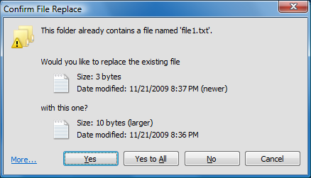

Classic Explorer
Classic Explorer
Classic
Explorer est une extension pour l’Explorateur Windows qui :
- Ajoute une barre d’outils à L’Explorateur Windows pour des opérations courantes (Aller au dossier parent, Couper, Copier, Coller, Supprimer,, Courriel). La barre d’outils est entièrement personnalisable
- Remplace la boîte de dialogue de Copie dans Windows 7 avec une version “classique” plus ’user-friendly’ similaire à celle de Windows XP
- Réponds au raccourci clavier Alt+Entrée dans le panneau de L’Explorateur Windows et affiche les propriétés du dossier sélectionné
- Dispose d’options pour personnaliser le panneau dossier pour ressembler d’avantage à celui de la version de Windows XP ou ne pas faire de fondu sur les boutons qui servent à développer
- Peut afficher l’espace libre et la taille totale des fichiers dans la barre d’état
- Peut désactiver le fil d’Ariane dans la barre d’adresse
- Corrections
une longue liste de fonctions qui étaient cassés dans Windows 7 – absence d’icône, surimpression des dossiers partagés, les dossiers de saut dans le panneau de navigation, l’absence des entêtes de colonnes de trie dans la vue liste, et plus
Nouvelle boîte de dialogue Copie (Windows 7 uniquement)
Dans Vista quand vous copiez des fichiers et qu’il y a un conflit, on vous affiche ça :

Quel est le problème ?
Pour les débutants
c’est une fenêtre de la taille d’une moitié d’écran que vous avez à lire. Aussi ce n’est pas
immédiatement clair quelles parties sont cliquables.
Vous devez déplacer la souris autour pour découvrir les zones UI comme Jeu d’aventure de Lucas Arts
Et finalement la convivialité du clavier est terrible. Pour vous dire
“oui, je sais ce que je fais. Je veux remplacer tous les fichiers” vous devez
presser Alt+D, flèche haut, flèche haut, flèche haut, Espace ! C’est plus difficle que de faire le mouvement Akuma
Kara Demon dans Street Fighter 3. Il y a un temps et une place pour ce genre de choses et copier des fichiers n’en est pas une.
L’extension Classic Explorer ramène les boîtes de dialogues simples Windows XP:

C’est immédiatement clair ce qui est cliquable(indice – les boutons en bas), il ya une navigation facile via le clavier (pressez O pour “Oui”, A pour copier tous les fichiers)
et vous pourrez quand même continuer à voir quel fichier est plus récent et quel fichier est plus grand. Et bien sûr tout comme dans Windows XP, Maintenir enfoncé Majuscule pendant que vous cliquerez sur le bouton Non signifiera "Non à tous" (ou pressez juste Majuscule+N).
Si vous cliquez sur Plus… vous obtiendrez le dialogue original de Windows. A partir de là
vous verrez tous les détails et vous obtiendrez une option supplémentaire pour “Copier, mais garder les deux fichiers”.
Note Importante : Seulement cette boîte de dialogue sera remplacée. Le sous-système qui réalise la copie ne sera pas affecté.
Alt+Entrée dans le panneau dossier
Alt+Entrée est raccourci clavier universel à travers Windows pour afficher les
proriété de la sélection. Mais dans les nouvelles versions de Windows, cela
ne marche pas dans le panneau de gauche qui montre les dossiers. Cela marche bien
dans le panneau de droite où s’affichent les fichiers. C’était cassé en comparaison
avec Windows XP où Alt+Entrée marchait des deux côtés.
Pour résoudre ce problème, l’extension Classic Explorer détecte lorsque
vous appuyez sur Alt+Entrée et affiche les propriétés pour le dossier courant sélectionné.
Barre d’outils pour l’Explorateur Windows
L’Explorateur Windows dans Vista n’a pas de barre d’outils comme celle
dans Windows XP. Si vous voulez aller au dossier parent vous devez utiliser la barre fil d’Ariane.
Si vous voulez copier ou supprimer un fichier avec la souris vous devez faire un clic droit et chercher
la commande Supprimer. Le menu contextuel devient de plus en plus grand au fur et à mesure que vous
avez des extensions du shell installées, et trouver la bonne commande peut prendre du temps.
Pour solutionner ce problème, l’extension Classic Explorer ajoute une nouvelle barre d’outils :

Les boutons disponibles sont : Aller au dossier parent, Couper, Copier, Coller, Supprimer, Propriétés, Courriel, Paramètres.
Plus de boutons peuvent être ajouter dans la boîte de dialogue Paramètres
Astuces:
- Maintenez la touche Contrôle (Ctrl) appuyée lorsque vous cliquez sur le bouton Haut pour ouvrir le dossier parent dans une nouvelle fenêtre Explorateur.
- Maintenez la touche Majuscule lorsque vous cliquez sur le bouton Supprimer pour supprimer définitivement un fichier
La nouvelle barre d’outils ne s’affiche pas automatiquement dans l’Explorateur après l’installation.
Vous devez d’abord faire quelques réglages avant de pouvoir l&#
- Ouvrir une nouvelle fenêtre de l’Explorateur (Touche Win+E)
- Activer le menu dans l’Explorateur – Aller à Outils (Alt+T), Option du dossier,
l’onglet Vue, et vérifiez que “Toujours afficher les menus” est coché.
- Clic droit sur la barre de menu et sélectionnez “Classic Explorer Bar” pour afficher la barre d’outils.
- Si cette option n’est pas disponible (vous ne voyez que “Verrouillez les barres d’outils”) vous devez
peut-être actvier la barre d’outils dans Internet Explorer.
Exécutez IE, clic droit sur la barre d’outils et sélectionnez “Classic Explorer Bar”.
Il vous demandera si vous voulez activer cette extension. Sélectionnez “Activer”,
puis répétez les étapes 1 jusqu’à 3 de nouveau.
- Si même avec ça vous ne voyez toujours pas la barre d’outils, peut-être que les extensions de votre
navigateur sont désactivées sur votre système. C’est normalement le réglage par défaut pour
les serveurs. Ouvrez les "Options Internet", allez à l’onglet "Avancé", et vérifiez que l’option "Activer les extensions tierce partie".
Barre d’état
Classic Explorer restaure la barre d’état originale de l&#Explorateur qui affiche l’espace libre et la taille des fichiers sélectionnés :

A la différence de la barre d’état, la taille de la sélection est afficher même si
plus de 100 fichiers sont sélectionnés. Quand aucun fichier n’est sélectionné le total
de tous les fichiers du dossier est affiché.
Note Windows 7 : Classic Explorer améliore la barre d’état
par défaut à la place de la remplacer. Pour le voir, vous devez l’activer à partir du menu Affichage/Vue.
La barre d’état est différente du Panneau de Détails bleu que vous apercevez en bas de l’Explorateur. Vous pouvez désactiver le
Panneau de Détails à partir du menu Organiser pour gagner de l’espace. Aussi, il y a un bug dans
l’Explorateur de Windows 7 qui des fois ne vous montre plus aucun texte dans la barre d’état.
Appuyez F5 pour rafraîchir la vue et obtenir le texte d’état.
Note Windows 8 : Classic Explorer ajoute sa propre
barre d’état. Vous devriez cacher la barre d’état par défaut pour économiser de l’espace.
Sélectionnez l’onglet Affichage dans le rubban, puis cliquez sur Options. Sélectionnez
Modifier les options des dossiers et de recherche dans le menu déroulants. Sélectionnez l’onglet Affichage.
Trouvez la case à cocher "Afficher la barre d’état" et décochez-là.
Paramètres
Vous pouvez accéder aux paramètres de Classic Explorer à partir de la barre d’outils ou à partir du menu démarrer :
Vous pouvez choirsir de voir les paramètres de base, ou tous les paramètres disponibles.
Survolez chaque paramètre pour afficher une description de sa fonction. Saisissez un terme dans
la boîte de recherche pour trouver un paramètre par son nom.
Chaque paramètre à une valeur par défaut. La valeur par défaut peut être une constante,
ou cela peut dépendre de vos paramètres systèmes actuels. Une fois que vous modifiez
un paramètre, il devient ’modifié’ et est affiché en gras. Pour revenir à la valeur par
défaut, clic droit sur le paramètre.
Vous pouvez enregistrer les paramètres dans un fichier XML, et plus tard les recharger.
Appuyez le bouton Sauvegarde pour accéder à ces fonctions. A partir
de là vous pouvez réinitialiser tous les paramètres à leur valeurs par défaut.
Appuyez OK pour stocker vos paramètres. La plupart des paramètres seront appliqués
la prochaine fois que vous ouvrirez une nouvelle fenêtre de l’Explorateur. Un petit nombre
de paramètres nécessiterons que vous fermiez la session pour prendre effet.
Note: Toutes les fenêtres de paramètres sont redimensionnables.Redimensionnélez et placez-les où vous voulez qu’elles soient. Elles se
rappeleront leurs nouvelles positions.
Voici un exemple de ce qui peut être personnalisé :
Cliquez sur l’onglet Boutons de la barre d’outils pour personnaliser la barre d’outils :

La colonne sur la gauche affiche les boutons actifs sur la barre d’outils,
et la colonne de droite liste les boutons que vous pouvez ajouter à
la barre d’outils. Vous pouvez glisser et déposer les boutons de
la colonne de droite à celle de gauche. Vous pouvez réarranger les
boutons en les déplaçant vers le haut ou le bas. Si vous vous lâcher un bouton
sur un autre vous créerai un sous-menu.
Survolez chaque bouton pour voir une courte description de leur fonction. Clic droit
sur chaque bouton pour accéder à plus de fonctions (comme Supprimer, Renommer, etc.). A partir du menu
contextuel vous pouvez aussi réinitialiser la barre d’outils à son état d’origine.
Chaque élément dans la colonne de gauche doit avoir un nom unique. C’est l’identifiant de l’élément
et ne peut contenir que des lettres Anglaise, nombre et tiret bas. Certains éléments (comme SEPARATEUR)
ne peuvent pas être renommés.
Note Importante : Pas toutes les commandes ont un icône ou un text par défaut disponible. C’est parce que Windows n’a pas d’icône pour des fonctions comme Annuler, Tout sélectionner, etc. Si vous voulez ce genre de boutons dans votre
barre d’outils vous devrez fournir vos propres icônes. Voir ci-dessous comment faire.
Après avoir placé un bouton dans la barre d’outils, vous pouvez éditer ses attributs. Double cliquez sur le bouton pour l’éditer.
Là vous pouvez sélectionnez une commande pour le bouton, son texte et son icône. Appuyez sur le bouton Restaurer les paramètres par défaut
pour retrouver le texte et l’icône par défaut de la commande choisie.
La commande peut être :
- laisser vide - alors si l’attribut lien est utilisé, il agira comme une commande
- une des commandes prédéfinies - à partir de la liste déroulante
- open <folder name> - ceci ouvrira le dossier dans le navigateur courant
- sortby <property> - Ceci triera le dossier avec la propriété choisie - name, type, size ou date. Utilisez ’-’ devant la propriété pour trier dans l’ordre descendant : "sortby -name". Vous pouvez utiliser
d’autres propriétés si vous connaissez leurs codes. Par exemple "sortby {B725F130-47EF-101A-A5F1-02608C9EEBAC}, 10" est la même chose que "sortby name". Pour plus de codes de propriétés référez-vous au fichier propkey.h dans le SDK de Windows (ou là ici - défilez vers le bas jusqu’à "Full property table"). Pas tous les codes de propriétés sont valides ou supportés (par exemple la propriété album year{56A3372E-CE9C-11D2-9F0E-006097C686F6}, 5 marche seulement quand vous affichez des albums de musique)
- groupby <property> - similaire à sortby, mais regroupes les fichiers par la propriété choisies.
Utilisez la commande groupby avec aucune propriété pour désactiver le regroupement
- une chaîne exécutable personnalisée
- ceci peut être un nom d’un programme et ses arguments, ou même une URL
(comme http://www.google.com). Vous pouvez utiliser des variables d’environnement comme %SystemRoot%. Vous pouvez aussi utiliser les variables d’espace réservé %1, %2, %3, %4 et %5:
- %1 est le chemin d’accès du dossier courant.
Gardez en tête que si le dossier courant est la racine d’un lecteur il finira avec un antislash (comme C:\)
- %2 est le chemin d’accès du fichier sélectionné (seulement quand un fichier unique est sélectionné)
- %3 est le nom d’un fichier texte temporaire qui contient tous les fichiers sélectionnés.
Chaque ligne de ce fichier texte contient un fichier avec son chemin d’accès complet
- %4 est pareil que %3, mais le fichier est en format Unicode (UTF16). Le fichier contient pas d’octet de marque d’ordre.
%3 et %4 ne peuvent pas être utilisés dans la même commande
- Note aux développeurs : Quand
%3 ou %4 sont utilisés, c’est de la responsabilité de la commande à supprimer le fichier temporaire quand la commande finie.
Autrement le fichier temporaire sera laissé derrière et gaspillera de l’espace disque. De plus, si la commande est une application console
ou un fichier de commandes (batch) il sera exécuté en mode silence sans fenêtre de console
- %5 est le nom d’un fichier texte temporaire, qui peut être utilisé pour rendre une commande à Classic Explorer.
Si les 2 premiers octets du fichier sont 255 et 254, le fichier sera traité comme étant de l’Unicode. Seulement une commande peut être utilisée à la fois.
La commande peut être :
- open <folder name> - force l’Explorateur à naviguer vers le dossier choisi
- select <list of file names>
- sélectionne les fichiers choisis, désélectionne les autres. Les nom de fichiers doivent être séparé par une tabulation ou par un caractère retour chariot.
Les fichiers ne devraient pas contenir un chemin d’accès. Si c’est le cas, le chemin d’accès sera ignoré.br>
- refresh - rafraîchit l’Explorateur
- Note aux développeurs :
les commandes utilisant %5 s’exécuteront en mode silence (comme les commandes utilisant %3 ou %4) mais l’Explorateur attendra que le
processus se termine. Le processus doit finir aussi rapidement que possible, car l’Explorateur sera gelé pendant l’exécution de la commande
- Voir la section suivante pour quelques exemples sur comment utiliser ces paramètres
Le lien peut être un chemin d’accès vers un fichier ou un dossier. Si c’est un fichier, ce fichier sera exécuté. Si c’est un dossier, ce dossier sera ouvert
sous la forme d’un sous-menu (seulement pour les boutons du niveau supérieur).
L’icône peut être :
- laisser vide - Alors si l’attribut lien pointe vers un fichier ou un dossier, l’icône de ce fichier ou dossier sera utilisé
- fichier ressource,icône ID - par exemple %windir%\notepad.exe,2. Ne laissez pas d’espace
entre le nom du fichier et la virgule. Vérifiez que vous utilisez l’icône ID de la ressource, et pas l’index de l’icône.
Pour de meilleurs résultats utilisez le bouton [...] à côté de la zone de saisie icône
- ,icône ID - identique à au-dessus, mais le fichier ressource est ClassicExplorer.dlllui-même. Ceci
est utile quand vous vous réferrez aux icônes propres à Classic Explorer
- fichier icône - par exemple C:\Program Files\Mozilla Thunderbird\Email.ico
- none - ceci utilisera un icône vide
Si les attributs légende et infos rapides commence par $ (signe dollar), alors le système le traitera comme le nom d’une chaîne
dans le fichier ExplorerL10N.ini. Le texte actuel dépendra des paramètres du langage courant. Ceci est utiles lorsque vous créez une barre
d’outils qui peut être utilisé dans des langages multiples.
Note aux développeurs : Les boutons des commandes personnalisées peuvent cochés ou désactivés. La barre d’outils vérifie la
clef de registrerie HKCU\Software\OpenShell\ClassicExplorer pour une valeur avec le nom de ce bouton (le nom utilisé dans la colonne gauche).
0 signifie normal, 1 signifie désactivé et 2 signifie coché. La barre d’outils lit la clef de registrerie au démarrage. Pour forcer les boutons à mettre à jour leurs états après ça,
vous devez trouver toutes les fenêtre de l’Explorateur, trouver la fenêtre enfant avec la classe OpenShell.CBandWindow, et
poster un message WM_CLEAR. Ceci est utile si vous développez un exe personnalisé pour être utilisé par la barre d’outils.
Exemples de Commandes personnalisées
0) Utilisez les guillements quand cela est nécessaire
Afin de supporter les chemins d’accès qui contiennent des espaces,
vous devriez utiliser des guillemets autour du paramètre chemin d’accès. Les guillemets ne sont pas toujours obligatoires, comme dans l’exemple 1
et 2 qui suit. Soyez sûr de tester les vos commandes avec des chemines d’accès contenant des espaces pour éviter les surprises.
1) Imprimer le dossier courant
Utilisez cette commande : cmd.exe /k echo %1. %1 sera remplacé par le chemin d’accès du dossier courant.
2) Ouvrir le fichier sélectionné dans le Notepad
Utilisez la commande : %SystemRoot%\notepad.exe %2.
%2 sera remplacé par le chemin d’accès complet du fichier sélectionné. Il n’est pas besoin de mettre les guillemets car le Notepad
utilise la ligne de commande complète comme nom de fichier.
3) Copier les fichiers sélectionnés vers le dossier parent
Créez un fichier de commandes (batch) appelé C:\CopyParent.bat:
set list=%1
set list=%list:"=%
for /F "delims=" %%i in (%list%) do copy /Y "%%i" ..
del %1
Utilisez cette commande : C:\CopyParent.bat "%3".
%3 sera remplacé par un fichier texte contenant le chemin d’accès complet de tous les fichiers sélectionnés. Le fichier de commandes (batch) lire chacune des lignes de ce fichier texte, et copiera chacun des fichiers sélectionné vers le dossier parent. A la fin le fichier supprimera le fichier temporaire initial.
Les deux premières commandes set supprime les guillements du paramètre %1 .
4) Sélectionner tous les fichiers textes
Créez un fichier de commandes (batch) appelé C:\SelectText.bat:
echo select > %1
dir *.txt /b >> %1
Utilisez cette commande : C:\SelectText.bat "%5".
%5 sera remplacé par un fichier texte vide, où la commande devra sortir le mot ’select’ et une liste de fichiers qu’il veut sélectionner.
La commande ’dir *.txt /b’ fournit cette liste.
Paramètres Administratifs
Ces paramètres sont par utilisateurs et sont stockés dans la registrerie. Par défaut chaque utilisateur peut éditer chacun de ses paramètres.
Un administrateur peut verrouiller des paramètres spécifiques, de façon à ce qu’aucun utilisateur ne puisse les modifier.

Dans cet exemple le paramètre "Afficher le bouton Haut" est verrouillé pour toujours être "Avant Précédent/Suivant" et ne peut pas être changer par aucun utilisateur.
Ceci est effectué par l’ajout du paramètre dans la clef de registrerie HKEY_LOCAL_MACHINE\SOFTWARE\OpenShell\ClassicExplorer.
Créez une valeur chaîne appelée "ShowUpButton" et saisissez "BeforeBack".
Dans certains cas vous ne voudrez pas verrouiller la valeur pour tous les utilisateurs, mais simplement modifier la valeur initiale du paramètre. Dans ce cas, ajoutez "_Default"
au nom de la valeur. Par exemple si vous voulez que le bouton "Haut" soit avant le bouton "Précédent" par défaut mais que vous voulez laisser les utilisateurs changer cet état comme ils le veulent, créez une valeur chaîne nommée "ShowUpButton_Default" et saisissez "BeforeBack".
La façon la plus simple de connaître le nom de la registrerie correspondant à un paramètre et sa valeur, c’est de le modifier, et ensuite de le chercher dans HKEY_CURRENT_USER\Software\OpenShell\ClassicExplorer\Settings.
Quelques fois vous voudrez verrouiller un paramètre à sa valeur par défaut, mais vous ne savez pas quelle est sa valeur par défaut. Dans ce cas, créez une valeur DWORD et saisissez
0xDEFA .
Il y a aussi un paramètre global EnableSettings. Saisissez 0 dans la registrerie pour empêcher les utilisateurs d’ouvrir le boîte de dialogue des paramètres :
Vous pouvez activer ou désactiver Classic Explorer pour les processus individuels en utilisant 2 paramètres de la registrerie "ProcessWhiteList" et "ProcessBlackList".
ProcessWhiteList est la liste des processus pur lesquels Classic Explorer se chargera. Utilisez uniquement le nom du fichier du processus (comme "notepad.exe"), séparez plusieurs noms avec une virgule ou un point-virgule. ProcessBlackList est la liste des processus pour lesquels
Classic Explorer ne se chargera pas. Vous devriez seulement utiliser une seule de ces listes. Si les deux listes sont spécifiées, la "ProcessBlackList" sera ignorée. Ces listes sont
seulement utilisées quand vous activez les fonctions qui sont supportées par des processus autres que l’explorateur. Actuellement, ces fonctions sont : la surimpressoin sur les icônes des dossiers partagés et le remplacement des dialogues de copie.
La modification des ces paramètres à travers les stratégies de groupe est aussi supportée. Décompressez le fichier PolicyDefinitions.zip qui se trouve dans
le dossier d’installation et lisez le document PolicyDefinitions.rtf pour plus de détails.
Dépendances en rapport aux paramètres Windows
Certains paramètres de Classic Explorer nécessitent que des paramètres spécifiques de Windows soient activés :
- Style du panneau de navigation de Windows Vista - nécessite que Windows utilise Aero ou le thème Basic
- Auto-navigation vers le dossier sélectionné
- ce paramètre peut être configuré à "Toujours" seulement quand l’Explorateur est configuré avec "Développer automatiquement le dossier courant". Cherchez le dans
l’onglet Général de Outils -> Options des dossiers
- Afficher la légende dans la barre de titre
- la légende affichera le chemin d’accès complet ou seulement le nom du dossier courant. Pour afficher le chemin d’accès complet vous devez activer
"Afficher le chemin d’accès complet dans la barre de titre (Thème Classic seulement)" dans l’onglet Affichage/Vue de Outils -> Options des dossiers
- Paramètre de toutes les barres d’état - nécessite que la barre d’état soit visible (ne doit pas être confondu avec le Panneau de Détails). Vérifiez Affichage -> Barre d’état
Localisation
L’interface utilisateur (excepté la boîte de dialogue des Paramètres) est traduite dans 35 langages.
La boîte de dialogue des Paramètres est traduite dans un nombre moins important de langages.
L’installation par défaut contient seulement l’Anglais. Plus de langages peuvent être téléchargés à partir de
Page de traduction. Vérifiez que vous téléchargez le packet de traduction pour la version correcte de votre Open-Shell.